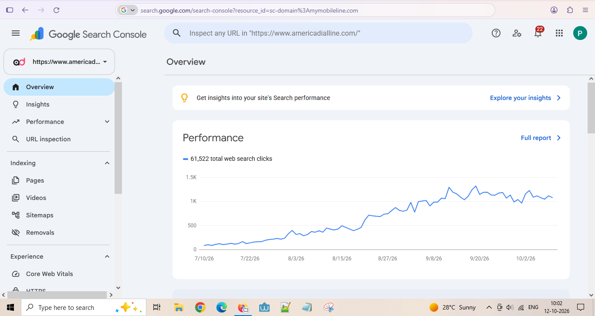
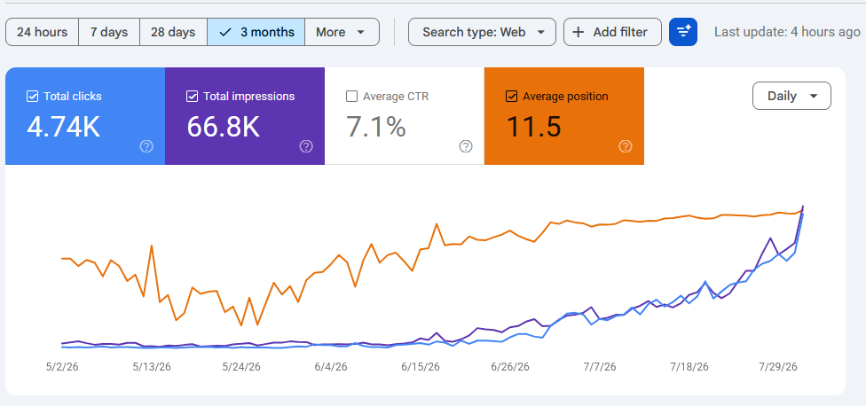
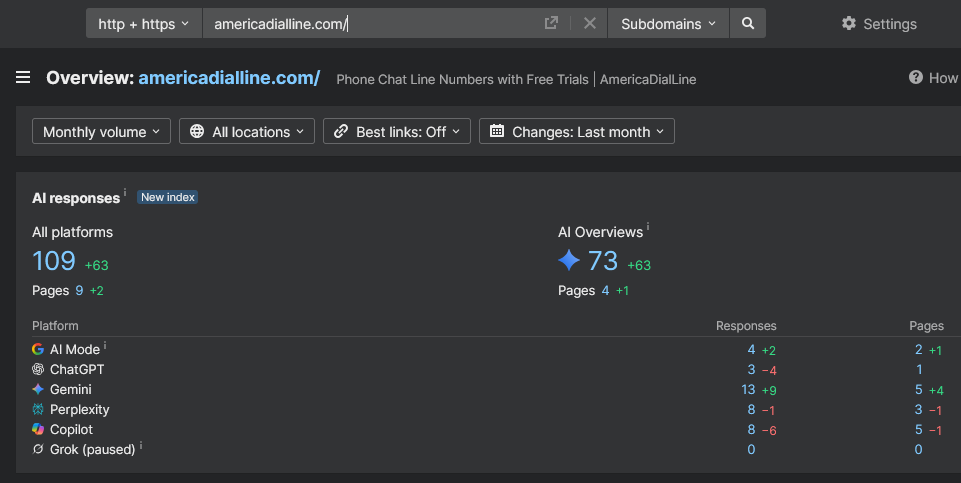
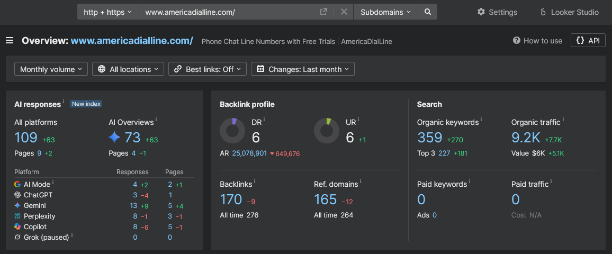

AmericaDialLine.com: From almost no organic traffic to search visibility at scale
A 120-day SEO implementation plan for a newly launched US online directory, combining technical foundations, structured content, internal linking, and measurement through Google Search Console, GA4, and Ahrefs.
The challenge
The site launched on 6 June 2026 as a new US online directory and began with an estimated eight organic visits per month and almost no ranking visibility. The goal was to build a technically sound, useful, trustworthy directory structure that could earn search visibility as it matured.
Organic traffic growth
Monthly organic visits supplied for this case study. The October value is the reported current result, not a full-month figure independently verified in this page.
*June baseline was described as about 8 organic visits/month at launch. **October value is the supplied reported figure; confirm whether it is month-to-date or a completed month before publishing.
What we implemented
The work combined technical setup, site-wide content development, information architecture, and a measurement process.
Technical foundations
Improved site structure, metadata, schema markup, XML sitemaps, and crawl-related issues to help search engines discover and interpret the website.
Full content suite
Built homepage, category pages, city location pages, FAQs, Safety & Trust, About, and policy pages, positioning the site as an independent third-party directory.
Internal linking & blog
Strengthened internal links between relevant pages and launched blog content targeting high-intent search terms.
Team execution
Split work across the team, assigned implementation tasks to developers, and tracked progress through a planned 120-day workflow.
Measurement
Monitored performance using Google Search Console, GA4, and Ahrefs to review search visibility, traffic trends, rankings, and estimated traffic value.
Guideline-aware SEO
Aligned the plan with Google Search Central guidance on helpful content and spam policies, avoiding tactics that would conflict with those principles.
Performance evidence
Selected screenshots that illustrate different parts of the growth story. Tool estimates and GSC measurements are different data sources and should not be treated as identical metrics.

Shows 61,522 total web search clicks in the overview and a rising daily click trend from July through October 2026. This is a cumulative overview metric, not a monthly visit count.

Shows 4.74K clicks, 66.8K impressions, 7.1% CTR, and average position 11.5 for the visible date window. The screenshot's range begins before the stated launch date, so use it as a tool snapshot, not a clean post-launch baseline.

The visible tool snapshot reports DR 6, 359 organic keywords, 9.2K estimated organic traffic, 227 top-three keywords, and $6K estimated traffic value. These are third-party estimates and differ from the later supplied figures.

Shows reported AI responses and AI Overview mentions in the Ahrefs interface. Treat this as a point-in-time snapshot, not proof of traffic impact.
Results supplied for June–October 2026
- Monthly organic visits: about 8 at the starting point, then 133 in July, 2,412 in August, 11,051 in September, and 14,727 in October.
- 681 ranking keywords, including 491 in top-three positions.
- Estimated organic traffic value of approximately $9,400 per month.
- Domain Rating remained below 10.
How to interpret the outcome
- The supplied monthly series indicates rapid growth in reported organic visits after launch.
- The low reported Domain Rating alongside growing visibility suggests the campaign did not depend on a high DR score alone.
- Search Console clicks, GA4 organic sessions/visits, and Ahrefs traffic estimates measure different things and should be reported separately.
- Keyword totals and traffic-value estimates depend on the tool and the date captured.